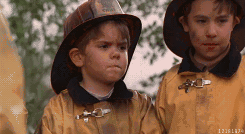

PROJECT
ROLE
Co-founder, Marketer, Designer
OBJECTIVE
MyFaceWhen was one of the first iOS GIF creation apps of 2012, birthed out of the idea to amplify the meme culture behind the phrase 'MyFaceWhen' and give people a better way to express themselves to their family and friends by creating, discovering, and sharing GIFs via mobile devices, emails, and social media networks.
STRATEGY
The goal with MyFaceWhen was to get millenials excited about utilizing gifs to express themselves whenever they touched their mobile device. Many of the strategies we used included creating demos onsite at music festivals, building relationships with influencers for the initial beta release, partnering with international app platforms to share MFW, and landing a spot on Dallas News CW33 as the App of the Week.
RESULTS
Downloads: 250K+, Apple Store Rating: 4.5, Reach: 500+ Countries, Press: Mashable, Vanity Fair, Refinery 29, CW33 News, and more.
MEDIA
← Back